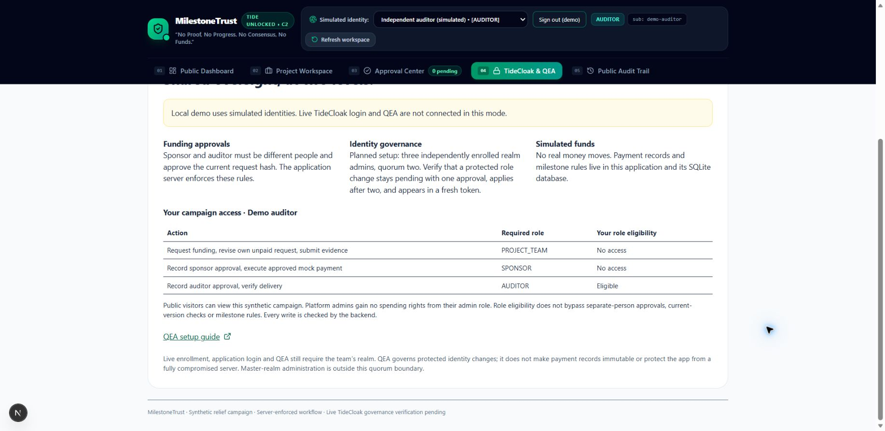

A plan before a payment.
The team names the recipient, purpose and milestone. Everyone reviews the same request.
RMIT HACKATHON 2026 / TIDE UNLOCKED
Help communities move forward. Release funding in stages, with independent decisions and evidence that the work is done.
A community-funding prototype built around shared responsibility.
One mission. Three accountable milestones.
01 / THE IDEA
Community teams need room to act. Sponsors need visibility. Independent auditors need a meaningful say in what happens next.
The team names the recipient, purpose and milestone. Everyone reviews the same request.
A sponsor and a separate auditor approve independently. Change the request, and both must review again.
Delivery evidence gets reviewed before the next allocation opens. An open stage still needs a new request.
02 / FOLLOW THE FUNDING
Step through one pilot allocation. These prepared examples illustrate the workflow; they do not execute payments or authenticate accounts.
IN THE WORKFLOW Project team
The pilot allocation is ready. The team prepares a request for 20 million VND of water filters.
ILLUSTRATIVE PREVIEW · SYNTHETIC DATA · NO REAL TRANSFERS
03 / INSIDE THE PROTOTYPE
The local application brings requests, reviews, mock releases and delivery evidence into one workspace.

The Next.js API checks membership, roles, independent reviewers and request versions. SQLite stores the campaign, approvals and mock payments.
View verification evidence →The app integrates login and token verification. A configured Tide realm can govern protected identity changes through QEA. Live verification is the next integration step.
Read the integration plan →All campaign records, identities in demo mode and funds are synthetic. QEA governs identity changes, not these payment records. The application server and SQLite remain trusted; the audit log is not immutable. Real bank integration, complete DPoP verification and live realm login/QEA are not demonstrated here.
EXPLORE THE CODE
Run the application locally with Node.js 24+.
Use the demo accounts to follow the complete flow.
# Inside the cloned repository
npm ci
npm run demo
# Open http://localhost:3000Local simulated identities · No Tide account needed